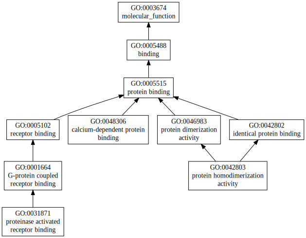
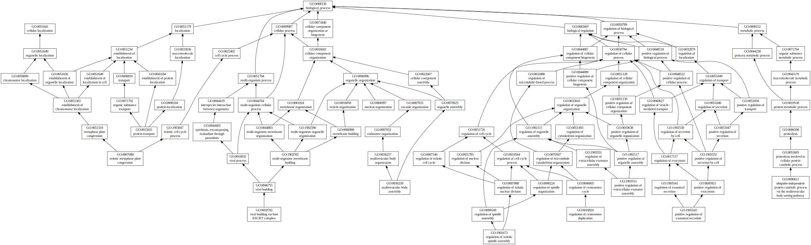
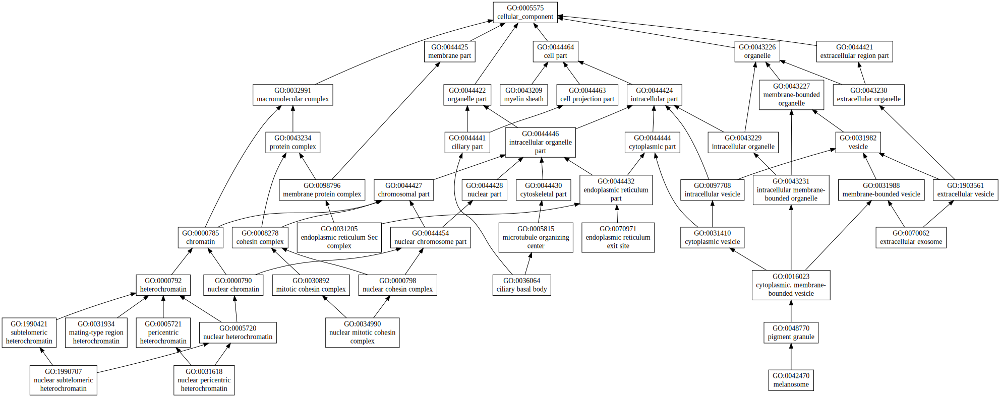

|

|
| GO term | CscoreGO | Name |
| GO:0048306 | 0.01 | calcium-dependent protein binding |
| GO:0042803 | 0.01 | protein homodimerization activity |
| GO:0031871 | 0.01 | proteinase activated receptor binding |
| Download full result of the above consensus prediction. |
| Click the graph to show a high resolution version. |
| (a) | CscoreGO is the confidence score of predicted GO terms. CscoreGO values range in between [0-1]; where a higher value indicates a better confidence in predicting the function using the template. |
| (b) | The graph shows the predicted terms within the Gene Ontology hierachy for Molecular Function. Confidently predicted terms are color coded by CscoreGO: |
| | [0.13,0.5) | [0.5,0.6) | [0.6,0.7) | [0.7,0.8) | [0.8,0.9) | [0.9,1.0] |
|
|
|

|
| GO term | CscoreGO | Name |
| GO:1903553 | 0.01 | positive regulation of extracellular exosome assembly |
| GO:1903543 | 0.01 | positive regulation of exosomal secretion |
| GO:1901673 | 0.01 | regulation of mitotic spindle assembly |
| GO:0090611 | 0.01 | ubiquitin-independent protein catabolic process via the multivesicular body sorting pathway |
| GO:0039702 | 0.01 | viral budding via host ESCRT complex |
| GO:0036258 | 0.01 | multivesicular body assembly |
| GO:0015031 | 0.01 | protein transport |
| GO:0010824 | 0.01 | regulation of centrosome duplication |
| GO:0007080 | 0.01 | mitotic metaphase plate congression |
| GO:0006997 | 0.01 | nucleus organization |
| Download full result of the above consensus prediction. |
| Click the graph to show a high resolution version. |
| (a) | CscoreGO is the confidence score of predicted GO terms. CscoreGO values range in between [0-1]; where a higher value indicates a better confidence in predicting the function using the template. |
| (b) | The graph shows the predicted terms within the Gene Ontology hierachy for Biological Process. Confidently predicted terms are color coded by CscoreGO: |
| | [0.08,0.5) | [0.5,0.6) | [0.6,0.7) | [0.7,0.8) | [0.8,0.9) | [0.9,1.0] |
|
|
|

|
| Download full result of the above consensus prediction. |
| Click the graph to show a high resolution version. |
| (a) | CscoreGO is the confidence score of predicted GO terms. CscoreGO values range in between [0-1]; where a higher value indicates a better confidence in predicting the function using the template. |
| (b) | The graph shows the predicted terms within the Gene Ontology hierachy for Cellular Component. Confidently predicted terms are color coded by CscoreGO: |
| | [0.14,0.5) | [0.5,0.6) | [0.6,0.7) | [0.7,0.8) | [0.8,0.9) | [0.9,1.0] |
|
|
|